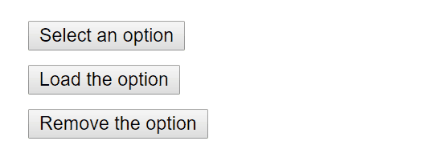

Web accessibility (also referred to as a11y) is the design and creation of websites that can be used by everyone. Accessibility support is necessary to allow assistive technology to interpret web pages.
React fully supports building accessible websites, often by using standard HTML techniques.
The Web Content Accessibility Guidelines provides guidelines for creating accessible web sites.
The following WCAG checklists provide an overview:
The Web Accessibility Initiative - Accessible Rich Internet Applications document contains techniques for building fully accessible JavaScript widgets.
Note that all aria-* HTML attributes are fully supported in JSX. Whereas most DOM properties and attributes in React are camelCased, these attributes should be hyphen-cased (also known as kebab-case, lisp-case, etc) as they are in plain HTML:
<input
type="text"
aria-label={labelText}
aria-required="true"
onChange={onchangeHandler}
value={inputValue}
name="name"
/>Semantic HTML is the foundation of accessibility in a web application. Using the various HTML elements to reinforce the meaning of information in our websites will often give us accessibility for free.
Sometimes we break HTML semantics when we add <div> elements to our JSX to make our React code work, especially when working with lists (<ol>, <ul> and <dl>) and the HTML <table>. In these cases we should rather use React Fragments to group together multiple elements.
For example,
import React, { Fragment } from 'react';
function ListItem({ item }) {
return (
<Fragment>
<dt>{item.term}</dt>
<dd>{item.description}</dd>
</Fragment>
);
}
function Glossary(props) {
return (
<dl>
{props.items.map(item => (
<ListItem item={item} key={item.id} />
))}
</dl>
);
}You can map a collection of items to an array of fragments as you would any other type of element as well:
function Glossary(props) {
return (
<dl>
{props.items.map(item => (
// Fragments should also have a `key` prop when mapping collections
<Fragment key={item.id}>
<dt>{item.term}</dt>
<dd>{item.description}</dd>
</Fragment>
))}
</dl>
);
}When you don’t need any props on the Fragment tag you can use the short syntax, if your tooling supports it:
function ListItem({ item }) {
return (
<>
<dt>{item.term}</dt>
<dd>{item.description}</dd>
</>
);
}For more info, see the Fragments documentation.
Every HTML form control, such as <input> and <textarea>, needs to be labeled accessibly. We need to provide descriptive labels that are also exposed to screen readers.
The following resources show us how to do this:
Although these standard HTML practices can be directly used in React, note that the for attribute is written as htmlFor in JSX:
<label htmlFor="namedInput">Name:</label>
<input id="namedInput" type="text" name="name"/>Error situations need to be understood by all users. The following link shows us how to expose error texts to screen readers as well:
Ensure that your web application can be fully operated with the keyboard only:
Keyboard focus refers to the current element in the DOM that is selected to accept input from the keyboard. We see it everywhere as a focus outline similar to that shown in the following image:
Only ever use CSS that removes this outline, for example by setting outline: 0, if you are replacing it with another focus outline implementation.
Provide a mechanism to allow users to skip past navigation sections in your application as this assists and speeds up keyboard navigation.
Skiplinks or Skip Navigation Links are hidden navigation links that only become visible when keyboard users interact with the page. They are very easy to implement with internal page anchors and some styling:
Also use landmark elements and roles, such as <main> and <aside>, to demarcate page regions as assistive technology allow the user to quickly navigate to these sections.
Read more about the use of these elements to enhance accessibility here:
Our React applications continuously modify the HTML DOM during runtime, sometimes leading to keyboard focus being lost or set to an unexpected element. In order to repair this, we need to programmatically nudge the keyboard focus in the right direction. For example, by resetting keyboard focus to a button that opened a modal window after that modal window is closed.
MDN Web Docs takes a look at this and describes how we can build keyboard-navigable JavaScript widgets.
To set focus in React, we can use Refs to DOM elements.
Using this, we first create a ref to an element in the JSX of a component class:
class CustomTextInput extends React.Component {
constructor(props) {
super(props);
// Create a ref to store the textInput DOM element
this.textInput = React.createRef();
}
render() {
// Use the `ref` callback to store a reference to the text input DOM
// element in an instance field (for example, this.textInput).
return (
<input
type="text"
ref={this.textInput}
/>
);
}
}Then we can focus it elsewhere in our component when needed:
focus() {
// Explicitly focus the text input using the raw DOM API
// Note: we're accessing "current" to get the DOM node
this.textInput.current.focus();
}Sometimes a parent component needs to set focus to an element in a child component. We can do this by exposing DOM refs to parent components through a special prop on the child component that forwards the parent’s ref to the child’s DOM node.
function CustomTextInput(props) {
return (
<div>
<input ref={props.inputRef} />
</div>
);
}
class Parent extends React.Component {
constructor(props) {
super(props);
this.inputElement = React.createRef();
}
render() {
return (
<CustomTextInput inputRef={this.inputElement} />
);
}
}
// Now you can set focus when required.
this.inputElement.current.focus();When using a HOC to extend components, it is recommended to forward the ref to the wrapped component using the forwardRef function of React. If a third party HOC does not implement ref forwarding, the above pattern can still be used as a fallback.
A great focus management example is the react-aria-modal. This is a relatively rare example of a fully accessible modal window. Not only does it set initial focus on the cancel button (preventing the keyboard user from accidentally activating the success action) and trap keyboard focus inside the modal, it also resets focus back to the element that initially triggered the modal.
Note:
While this is a very important accessibility feature, it is also a technique that should be used judiciously. Use it to repair the keyboard focus flow when it is disturbed, not to try and anticipate how users want to use applications.
Ensure that all functionality exposed through a mouse or pointer event can also be accessed using the keyboard alone. Depending only on the pointer device will lead to many cases where keyboard users cannot use your application.
To illustrate this, let’s look at a prolific example of broken accessibility caused by click events. This is the outside click pattern, where a user can disable an opened popover by clicking outside the element.

This is typically implemented by attaching a click event to the window object that closes the popover:
class OuterClickExample extends React.Component {
constructor(props) {
super(props);
this.state = { isOpen: false };
this.toggleContainer = React.createRef();
this.onClickHandler = this.onClickHandler.bind(this);
this.onClickOutsideHandler = this.onClickOutsideHandler.bind(this);
}
componentDidMount() {
window.addEventListener('click', this.onClickOutsideHandler);
}
componentWillUnmount() {
window.removeEventListener('click', this.onClickOutsideHandler);
}
onClickHandler() {
this.setState(currentState => ({
isOpen: !currentState.isOpen
}));
}
onClickOutsideHandler(event) {
if (this.state.isOpen && !this.toggleContainer.current.contains(event.target)) {
this.setState({ isOpen: false });
}
}
render() {
return (
<div ref={this.toggleContainer}>
<button onClick={this.onClickHandler}>Select an option</button>
{this.state.isOpen && (
<ul>
<li>Option 1</li>
<li>Option 2</li>
<li>Option 3</li>
</ul>
)}
</div>
);
}
}This may work fine for users with pointer devices, such as a mouse, but operating this with the keyboard alone leads to broken functionality when tabbing to the next element as the window object never receives a click event. This can lead to obscured functionality which blocks users from using your application.

The same functionality can be achieved by using appropriate event handlers instead, such as onBlur and onFocus:
class BlurExample extends React.Component {
constructor(props) {
super(props);
this.state = { isOpen: false };
this.timeOutId = null;
this.onClickHandler = this.onClickHandler.bind(this);
this.onBlurHandler = this.onBlurHandler.bind(this);
this.onFocusHandler = this.onFocusHandler.bind(this);
}
onClickHandler() {
this.setState(currentState => ({
isOpen: !currentState.isOpen
}));
}
// We close the popover on the next tick by using setTimeout.
// This is necessary because we need to first check if
// another child of the element has received focus as
// the blur event fires prior to the new focus event.
onBlurHandler() {
this.timeOutId = setTimeout(() => {
this.setState({
isOpen: false
});
});
}
// If a child receives focus, do not close the popover.
onFocusHandler() {
clearTimeout(this.timeOutId);
}
render() {
// React assists us by bubbling the blur and
// focus events to the parent.
return (
<div onBlur={this.onBlurHandler}
onFocus={this.onFocusHandler}>
<button onClick={this.onClickHandler}
aria-haspopup="true"
aria-expanded={this.state.isOpen}>
Select an option
</button>
{this.state.isOpen && (
<ul>
<li>Option 1</li>
<li>Option 2</li>
<li>Option 3</li>
</ul>
)}
</div>
);
}
}This code exposes the functionality to both pointer device and keyboard users. Also note the added aria-* props to support screen-reader users. For simplicity’s sake the keyboard events to enable arrow key interaction of the popover options have not been implemented.

This is one example of many cases where depending on only pointer and mouse events will break functionality for keyboard users. Always testing with the keyboard will immediately highlight the problem areas which can then be fixed by using keyboard aware event handlers.
A more complex user experience should not mean a less accessible one. Whereas accessibility is most easily achieved by coding as close to HTML as possible, even the most complex widget can be coded accessibly.
Here we require knowledge of ARIA Roles as well as ARIA States and Properties. These are toolboxes filled with HTML attributes that are fully supported in JSX and enable us to construct fully accessible, highly functional React components.
Each type of widget has a specific design pattern and is expected to function in a certain way by users and user agents alike:
Indicate the human language of page texts as screen reader software uses this to select the correct voice settings:
Set the document <title> to correctly describe the current page content as this ensures that the user remains aware of the current page context:
We can set this in React using the React Document Title Component.
Ensure that all readable text on your website has sufficient color contrast to remain maximally readable by users with low vision:
It can be tedious to manually calculate the proper color combinations for all cases in your website so instead, you can calculate an entire accessible color palette with Colorable.
Both the aXe and WAVE tools mentioned below also include color contrast tests and will report on contrast errors.
If you want to extend your contrast testing abilities you can use these tools:
There are a number of tools we can use to assist in the creation of accessible web applications.
By far the easiest and also one of the most important checks is to test if your entire website can be reached and used with the keyboard alone. Do this by:
Tab and Shift+Tab to browse.Enter to activate elements.We can check some accessibility features directly in our JSX code. Often intellisense checks are already provided in JSX aware IDE’s for the ARIA roles, states and properties. We also have access to the following tool:
The eslint-plugin-jsx-a11y plugin for ESLint provides AST linting feedback regarding accessibility issues in your JSX. Many IDE’s allow you to integrate these findings directly into code analysis and source code windows.
Create React App has this plugin with a subset of rules activated. If you want to enable even more accessibility rules, you can create an .eslintrc file in the root of your project with this content:
A number of tools exist that can run accessibility audits on web pages in your browser. Please use them in combination with other accessibility checks mentioned here as they can only test the technical accessibility of your HTML.
Deque Systems offers aXe-core for automated and end-to-end accessibility tests of your applications. This module includes integrations for Selenium.
The Accessibility Engine or aXe, is an accessibility inspector browser extension built on aXe-core.
You can also use the react-axe module to report these accessibility findings directly to the console while developing and debugging.
The Web Accessibility Evaluation Tool is another accessibility browser extension.
The Accessibility Tree is a subset of the DOM tree that contains accessible objects for every DOM element that should be exposed to assistive technology, such as screen readers.
In some browsers we can easily view the accessibility information for each element in the accessibility tree:
Testing with a screen reader should form part of your accessibility tests.
Please note that browser / screen reader combinations matter. It is recommended that you test your application in the browser best suited to your screen reader of choice.
NonVisual Desktop Access or NVDA is an open source Windows screen reader that is widely used.
Refer to the following guides on how to best use NVDA:
VoiceOver is an integrated screen reader on Apple devices.
Refer to the following guides on how to activate and use VoiceOver:
Job Access With Speech or JAWS, is a prolifically used screen reader on Windows.
Refer to the following guides on how to best use JAWS:
ChromeVox is an integrated screen reader on Chromebooks and is available as an extension for Google Chrome.
Refer to the following guides on how best to use ChromeVox: